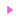

Juego Responsable
Creemos que jugar debe ser siempre una experiencia divertida, controlada y sin riesgos innecesarios. Por eso promovemos el juego responsable como parte fundamental de nuestra filosofía.
¿Qué es el juego responsable?
Se trata de jugar con conciencia y límites. Significa saber cuándo parar, entender que el juego es una forma de entretenimiento y no una forma de ganar dinero garantizado. Apostar no debe convertirse en una obligación ni afectar tu bienestar personal o económico.
-

Establece un horario para jugar y respétalo.
-
Define un presupuesto máximo y no lo sobrepases.
-
Juega solo por diversión, no para recuperar pérdidas.
-
No combines el juego con alcohol o estrés.
-
Tómate descansos frecuentes, incluso si estás ganando.
-
Lleva un registro de tu actividad para saber cómo juegas.
¿Cómo saber si tengo un problema?
Si notas que pierdes el control, que el juego afecta tu vida diaria o que estás gastando más de lo que puedes permitirte, es momento de hacer una pausa. El juego no debe generar ansiedad, deudas ni conflictos con tu entorno. Si sientes que ya no es solo un pasatiempo, buscar ayuda es una buena decisión.
Organizaciones que pueden ayudarte
Si crees que tú o alguien cercano necesita apoyo, estas organizaciones ofrecen ayuda gratuita y confidencial:
-
Jugadores Anónimos México
-
CONADIC (Consejo Nacional contra las Adicciones)
-
GAM-ANON — Apoyo para familiares de jugadores
Compromiso
En nuestro sitio solo encontrarás contenido informativo. No operamos como casino, ni permitimos el acceso a apuestas. Pero sí nos comprometemos a ofrecer materiales útiles, guías claras y un espacio seguro para aprender sobre el juego.
Juega con cabeza. Juega con calma. El mejor juego es el que se disfruta sin excesos.
Plinko 1Win